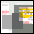

TraceNoizer Generates Clones from your Databody in order to Disinform Those, Who are Spying on You!
TraceNoizer is a webbased search, analysis and homepage publication system.
» more!
START Here!!!
your forename
surname:
Feed TraceNoizer your first name and last name and it will generate a test clone
.
Download Tracenoizer as CD-ROM and noize at home
Download a CD-Image of Tracenoizer, burn-it on CD-ROM, reboot your machine and noize at home.
» go!
Still Sceptic? Look at Clone Examples
Here is a list of clones made by tracenoizer of some of the nominees of the read_me festival taking place in moscow.
» go!

Clone Community
See what others have done with the tracenoizer cloning engine.
» go!